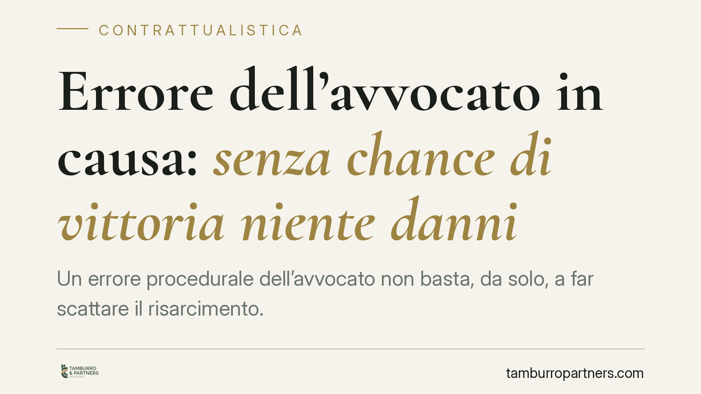

Errore dell'avvocato in causa: senza chance di vittoria niente danni
Un errore procedurale dell'avvocato non basta, da solo, a far scattare il risarcimento. La Corte di Cassazione ribadisce che il cliente deve dimostrare il nesso causale tra la condotta e il danno, provando la concreta probabilità di vittoria che l'errore gli avrebbe sottratto. Un principio che ridimensiona gli automatismi e sposta l'attenzione sulla prova della perdita di chance.

Il caso
Un cliente cita in giudizio il proprio avvocato lamentando un errore processuale: un adempimento omesso o compiuto in ritardo che, a suo dire, avrebbe compromesso l'esito della lite originaria. La domanda è risarcitoria: il professionista deve rispondere del pregiudizio subìto.
La Corte di Cassazione respinge l'idea che l'errore, di per sé, generi automaticamente un danno risarcibile. L'errore è condizione necessaria, non sufficiente. Occorre dimostrare che, in assenza di quell'errore, il cliente avrebbe verosimilmente ottenuto un risultato favorevole.
*Nota redazionale: gli estremi della pronuncia (numero, sezione e data) vanno verificati sulle fonti ufficiali — CED della Cassazione e archivio Italgiure — prima di ogni citazione puntuale a firma dello studio.*
Inquadramento normativo
La responsabilità dell'avvocato verso il cliente ha natura contrattuale: nasce dal contratto d'opera professionale e si valuta secondo l'art. 1218 c.c., che disciplina l'inadempimento delle obbligazioni.
Il parametro di diligenza è quello dell'art. 1176, secondo comma, c.c.: la diligenza del professionista si misura con riguardo alla natura dell'attività esercitata. Quella dell'avvocato è, di regola, un'obbligazione di mezzi: il legale si impegna a difendere con competenza e cura, non a garantire la vittoria. Per questo l'esito sfavorevole del giudizio non prova, da solo, l'inadempimento.
Quando l'errore è però accertato, resta il nodo più delicato: stabilire se e in che misura esso abbia inciso sull'esito. Qui entra in gioco la figura della perdita di chance, ossia la perdita della concreta possibilità di conseguire un risultato utile. Non si risarcisce il risultato mancato in sé, ma la probabilità — apprezzabile e provata — di ottenerlo.
Il giudizio prognostico e la regola del "più probabile che non"
Per riconoscere il danno il giudice compie un giudizio prognostico: ricostruisce, in via ipotetica, come si sarebbe conclusa la causa originaria in assenza dell'errore. Si tratta di una valutazione controfattuale, fondata sugli atti, sulle prove disponibili e sull'orientamento giurisprudenziale applicabile alla vicenda.
Il nesso causale si accerta secondo la regola del "più probabile che non": occorre che la vittoria del cliente, senza l'errore, fosse più probabile della soccombenza. Una possibilità remota o meramente teorica non basta. Se la causa originaria era comunque destinata a un esito negativo, l'errore non ha prodotto alcun danno risarcibile, perché non ha sottratto nulla di concretamente conseguibile.
L'onere della prova grava sul cliente: deve allegare e dimostrare l'errore, il danno e la ragionevole probabilità di successo perduta.
Implicazioni pratiche
Per chi intende agire contro il proprio difensore, la pronuncia alza l'asticella probatoria. Non è sufficiente indicare lo sbaglio: bisogna ricostruire il merito della causa persa e argomentare, atti alla mano, perché sarebbe stata vinta.
Per il professionista, il principio conferma che la valutazione della responsabilità non prescinde mai dalla fondatezza della posizione difesa. Un errore su una causa priva di reali prospettive non integra un danno risarcibile.
Resta centrale la documentazione dell'attività svolta: corrispondenza, pareri, avvertenze sui rischi processuali. È su questo materiale che si gioca sia la difesa del professionista sia la prova del cliente.
Cosa fare in concreto
- Ricostruisci il merito. Prima di agire, valuta la reale probabilità di vittoria della causa originaria: senza chance concreta, l'azione risarcitoria è destinata al rigetto.
- Raccogli la documentazione. Conserva mandato, corrispondenza, atti processuali e pareri: sono la base del giudizio prognostico.
- Rispetta il termine di prescrizione. L'azione di responsabilità contrattuale si prescrive in dieci anni (art. 2946 c.c.), decorrenti dal momento in cui il danno si è verificato ed è divenuto conoscibile.
- Predisponi una consulenza tecnico-giuridica. Un'analisi preliminare del fascicolo consente di stimare la solidità del nesso causale prima di intraprendere la lite.
- Per il professionista: formalizza gli avvertimenti. Documentare per iscritto i rischi processuali e le scelte condivise con il cliente riduce l'esposizione a future contestazioni.
---
Contributo informativo a cura di Tamburro & Partners Avvocati - Avv. Giuseppe Tamburro. Non costituisce parere legale.
Ogni contratto ha il suo equilibrio.
Se vuoi una revisione delle clausole o una redazione su misura, scrivi allo studio. Ti rispondiamo entro un giorno lavorativo.